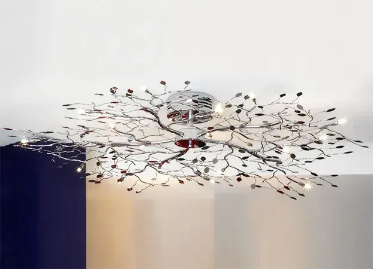

Strada Arinilor 68, Râmnicu Vâlcea, România
+40 773 310 816
Strada Arinilor 68, Râmnicu Vâlcea, România
+40 773 310 816
Alegerea unui candelabru nu este această sarcină obișnuită, deoarece are capacitatea de a se urca la prima vedere. Pe de o parte, gama actuală de dispozitive de iluminat este atât de bogată și variată încât nu este dificil să alegeți produsul dorit. C diferit - pentru a alege un model care nu numai că ar fi frumos în sine, ci să se potrivească armonios în exteriorul din jurul său și „cinci plus” a fost controlat cu funcția de iluminare centrală atribuită acestuia, trebuie să începeți de la un număr a pretenţiilor. Drept urmare, în nota furnizată, vom vorbi cu dvs. doar despre cum să alegeți un candelabru și să rămânem mulțumiți de acest lucru.
Principalele
tipuri de sisteme sunt modelele suspendate și de tavan. Având în vedere acest lucru, în practică există un număr
mare de soiuri intermediare, dar atunci când discutăm despre cum să alegem un candelabru, ajungem doar la
tipurile de bază.
Candelabrele cu suspensie implică produse din mai multe nuanțe atașate unui lanț lung, sfoară sau șnur. De
regulă, aceste modele sunt fabricate din plastic, țesătură sau sticlă. Sunt grozave de folosit în încăperi mari,
dar mici - în bucătărie, în sufragerie, în birou sau pe hol. Cel mai adesea, înălțimea acestora poate fi reglată
prin îndepărtarea verigilor din lanț. Acordați atenție prezenței reglementărilor, dacă nu există nicio îndoială
dacă produsul selectat se va potrivi în camera dvs. de pe un deal.
La rândul lor, candelabrele de tavan funcționează ca un excelent dispozitiv de iluminare centrală pentru încăperile mici cu tavane joase. Adesea au un număr mic de nuanțe sau sunt complet lipsite de ele, dacă se folosesc becuri LED.
